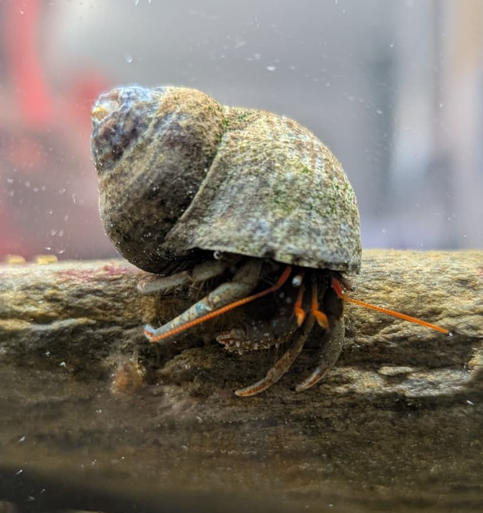

Pagure de roche
Clibanarius erythropus
Petit crustacé très commun sur les côtes rocheuses européennes, le pagure de roche protège son abdomen mou en occupant des coquilles vides de gastéropodes qu'il change au cours de sa croissance.
Informations scientifiques
| Nom scientifique | Clibanarius erythropus |
|---|---|
| Nom commun | Pagure de roche |
| Famille | Diogenidae |
| Ordre | Decapoda |
| Classe | Malacostraca |
| Habitat | Zones rocheuses, mares et estran. |
| Répartition | Atlantique Est, Manche et Méditerranée. |
| Taille | Entre 1,5 et 3 cm. |
| Espérance de vie | Jusqu'à environ 5 ans |
Description
Le Pagure de roche possède un abdomen mou qu'il protège
en vivant dans une coquille vide. Au fur et à mesure de sa croissance,
il recherche des coquilles plus grandes.
c'est un petit bernard-l'ermite aux pinces courtes et épaisses, de taille sensiblement égale, dotées d'extrémités noires et cornées et recouvertes de poils. La carapace est plus longue que large (jusqu'à 1,5 cm), il a des "antennes" orangées et son corps est de couleur verdatre, foncé.
Omnivore et détritivore, il participe au nettoyage du littoral en
consommant des algues, des débris organiques et de petits invertébrés.
Cette espèce est particulièrement fréquente dans les mares découvertes
à marée basse où elle est souvent observée en groupes.